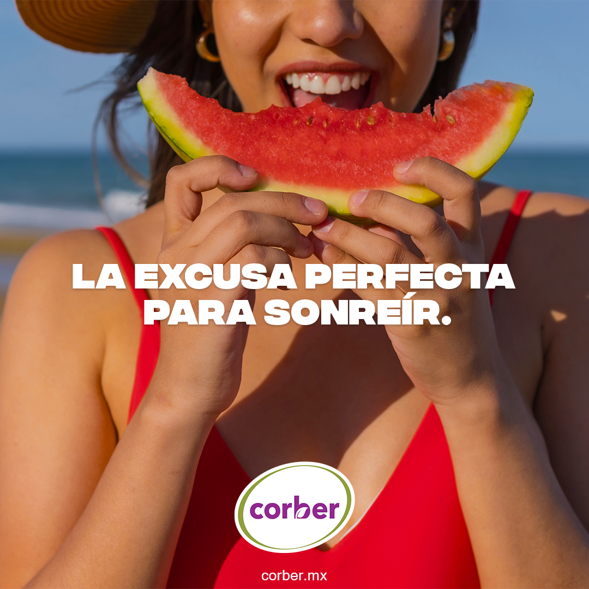

§ 01 — Contenido digital · agroexportación
Corber
Dinamización de marca para una empresa de agroexportación: copy, artes y reels para sostener una comunicación constante sin estructura formal de marketing.
Cadencia digital sostenida
Copy + artes + reels
Agroexportación

La voz del producto.
Escribir mensajes que expliquen el producto sin caer en jerga agroexportadora — directos, claros, con cadencia.


Artes en cadencia.
Piezas constantes para alimentar redes con frecuencia, manteniendo tono propio y producto en el centro.


Sin estructura de marketing,
lo que sostiene una marca
es cadencia.
— Criterio de contenidoCorber · 2024–2025
Lo que sigue: el inventario de piezas — copy, artes, reels y comunicación de producto.
Reels para campo.
Cadencia
Digital sostenida
Copy + Artes
Sin estructura previa
Reels
Producción de video
Inventario de piezas
- CopyRedacción de mensajes y tono para canales digitales.
- Artes gráficosPiezas constantes para alimentar redes con frecuencia.
- ReelsProducción de video corto orientado a producto y campo.
- ComunicaciónBeneficios de producto traducidos a piezas claras.
Marca con ritmo.
Una marca con presencia digital sostenida y tono propio, construida pieza a pieza sin depender de campaña.
ClienteCorber
IndustriaAgroexportación
RolContent designer · copywriter · video creator
AgenciaIntuitiva · Mérida
Año2024–2025
TipoColaboración · ejecución de contenido
← Proyecto anteriorGBCBrand rollout · construcción
Siguiente proyecto →ChintContenido B2B · componentes eléctricos
© 2026 Julio Morcillo — Todos los derechos reservados.Diseñado y construido en Mérida, MX.